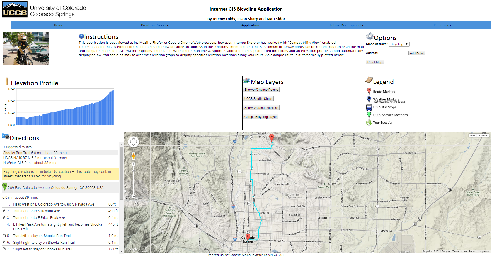
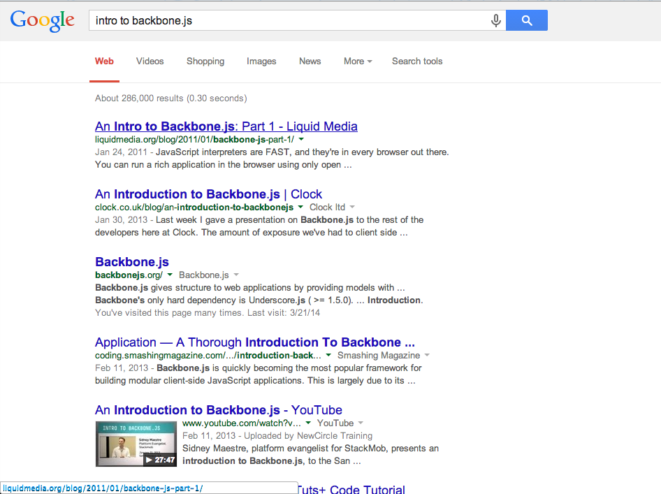

What's GeoHappening?
Our path to winning the (ArcGIS.js <= 100) Responsive Edition App Challenge
Featuring Bootstrap, Backbone.js and much more!
With Jeremy Folds and Nick Volpe
GIS Developers with DTS Agile
Why are we here?


To Gloat


To talk JavaScripts + Maps

How did we get here?
In the beginning...

GIS/LiDar/Orthoimagery

Automation

Intro to JavaScript/Web Applications
Becoming a Developer

University of Nebraska
at Kearney
GIS Principles
but NO CODE!


USFWS


Hired in Fort Collins

Flex!
My boss's Flex Skills:

My Flex Skills:

Getting Started?
Just do it.
Make mistakes
Debug
Make more mistakes
Debug
Getting started ::
Tools and Training
What Not to Do

Learn Code the Hard Way

Eloquent JavaScript

Pluralsight

JavaScript Weekly

Demo
Our Toolset
Backbone.js (jQuery, underscore.js) Bootstrap ESRI JavaScript API (dojo) Firebase typeahead.js GitHub Python SimpleHTTPServer


Backbone.js

Backbone.js :: Getting Started
Backbone.js :: Model
//Listen for change
model.on('change', toggleShare);
//Set some attributes
model.set('loc', {
lat: position.coords.latitude,
lon: position.coords.longitude
});
//execute on change
toggleShare: function (model) {
//Stuff Happens here
},
Bootstrap
Free and Open Source :: Twitter Responsive design :: Mobile first approach Handles cross-browser support :: Normalize.css Grid LayoutExamples FTW!!!
Firebase
No setup backend JavaScript API realtime
Firebase Dashboard

Instant REST endpoint